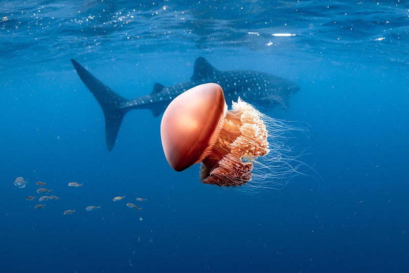

点击生物名称，跳转百度百科了解更多（新窗口打开）
| 生物名称 | 特点 | 小分队相遇场景 |
|---|---|---|
| 鲸鲨百科↗ | 世界上最大的鱼类，性情温和，以浮游生物为食 | 在开阔海域与鲸鲨同游，记录其迁徙路线 |
| 座头鲸百科↗ | 以优美的歌声和跃出水面的行为闻名 | 帮助迷路的小座头鲸找到妈妈 |
| 水母百科↗ | 身体95%是水，触手带有刺细胞，会发光 | 在深海观察水母群的发光现象 |
| 珊瑚礁百科↗ | 海洋中的热带雨林，孕育25%的海洋物种 | 参与珊瑚礁修复，保护海洋生物家园 |
| 章鱼百科↗ | 三颗心脏、九个大脑，最聪明的无脊椎动物 | 跟随章教授学习章鱼的伪装与智慧 |
| 海龟百科↗ | 可活100岁以上，能记住自己出生的海滩 | 护送小海龟安全返回大海 |

↑ 鲸鲨缓缓游过（CSS 动态浮动效果）
有什么想对海底小分队说的？填写下面的留言板吧！
← 返回首页 ← 队员介绍